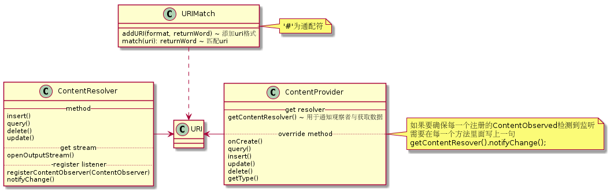

<p><link rel="stylesheet" href="github-markdown.css">
<article class="markdown-body"></p>

<h2>ContentProvider</h2>

<p>需要在manifest之中配置
<code></p>

<pre><code>&lt;provider name="xxx"
    authorities="url"
    exported="true"&gt;
</code></pre>

<p></code>
</p>

<p><article/></p>
